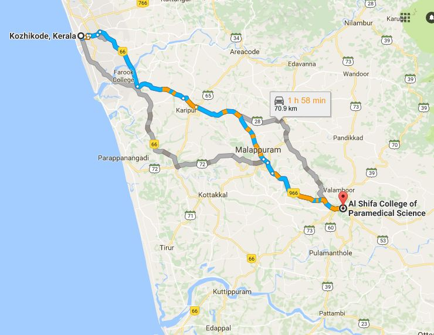

ADDRESS:
Al Shifa College of Paramedical Sciences,
Perinthalmanna,
Malappuram

Al Shifa College of Paramedical Sciences,
Perinthalmanna,
Malappuram
Al Shifa College of Pharmacy was established in the year 2002 with B.Pharm course. It is at proper perinthalmanna.
College is 68 Km Distant from Calicut.
Prayer meeting:Had a prayer Meeting till 2015. Subregion have contacts.
How to reach:Catch Perinthalmanna bus from new bus stand and get down at Perinthalmanna Jubilee Junction and take auto to college.
Possibility:MES Medical college can easily reach out and build new prayer meeting.